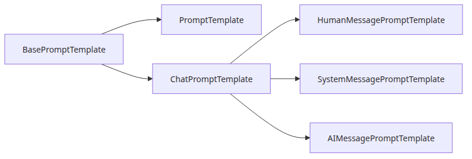
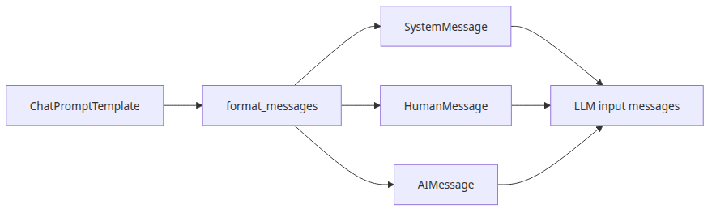
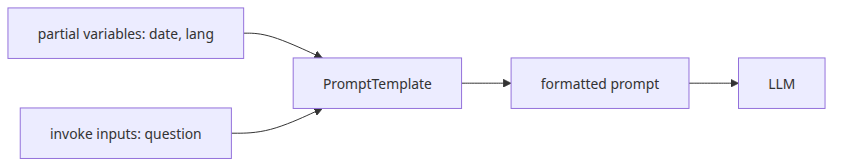
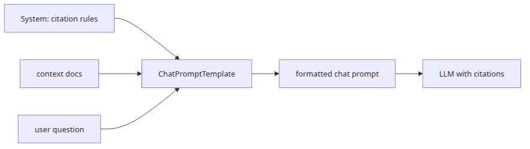

RAG Deep Dive series (4/6)
All code citations in this post are pinned to langchain-ai/langchain @ langchain==0.2.17.
By the end of Episode 3, the retriever has already done its part. The relevant chunks are in memory as Document objects. That still does not mean the model will see the right evidence. One more narrowing step remains before generation: prompt construction. This is where retrieved chunks are filtered, ordered, wrapped, and squeezed into the model's context window.
That is why prompt construction is not presentation glue. In RAG, it is the last loss point before inference. PromptTemplate and ChatPromptTemplate are runnable objects with validation, partial binding, prompt-value conversion, and, in the retrieval path, direct involvement in how Document.page_content becomes the {context} variable.
PromptTemplate internals: where a string becomes a runnable promptAt the source level, PromptTemplate lives in langchain_core.prompts.prompt.PromptTemplate, but most of the important behavior comes from its parent classes. PromptTemplate inherits from StringPromptTemplate, which itself inherits from BasePromptTemplate. That class stack explains why a prompt in LangChain is more than a formatted string. It has declared input_variables, optional partial_variables, validation logic, a runnable invoke() entry point, and a format_prompt() method that wraps the final string into a StringPromptValue object.

The most common constructor is PromptTemplate.from_template(template, template_format="f-string", partial_variables=None). It calls get_template_variables(...), subtracts any pre-filled partial variables, and stores the remainder in input_variables. The validators in prompt.py and base.py then enforce two guardrails: stop cannot be used as a variable name, and input_variables cannot overlap with partial_variables.
format() is the narrowest execution path. PromptTemplate.format(**kwargs) first calls _merge_partial_and_user_variables(**kwargs), then applies the selected formatter. With the default f-string format this is ordinary placeholder substitution. The source also supports mustache and jinja2, with an explicit warning that jinja2 should not be used with untrusted templates.
format_prompt() adds the next layer. StringPromptTemplate.format_prompt(**kwargs) returns StringPromptValue(text=self.format(**kwargs)). In LCEL, that means the prompt output remains a PromptValue instead of collapsing immediately to a raw string.
The distinction between PromptTemplate and ChatPromptTemplate becomes clear here. PromptTemplate.format() returns a string. PromptTemplate.format_prompt() returns a StringPromptValue. A chat prompt, by contrast, formats into a ChatPromptValue made of BaseMessage objects. So the source-level difference is not “old style versus new style.” It is “single string payload versus structured message payload.” That difference is what decides whether the downstream model receives one concatenated prompt or a sequence of role-tagged messages.
This small script shows the string side without involving any external model:
from langchain_core.prompts import PromptTemplate
def main() -> None:
prompt = PromptTemplate.from_template(
"Answer the question using only this policy excerpt:\n\n{context}\n\nQuestion: {question}",
partial_variables={"context": "Retry budget: 3 attempts before dead-lettering."},
)
print("input variables:", prompt.input_variables)
print("raw string:")
print(prompt.format(question="Why was the message dead-lettered?"))
prompt_value = prompt.format_prompt(question="Why was the message dead-lettered?")
print("prompt value type:", type(prompt_value).__name__)
print("prompt value text:")
print(prompt_value.to_string())
if __name__ == "__main__":
main()
The practical lesson is simple: prompt shape is enforced before any model call happens.
ChatPromptTemplate.from_messages(): composing structured message payloadsOnce you switch from string prompts to chat prompts, the center of gravity moves from one template string to a list of message templates. In langchain_core.prompts.chat, LangChain models that list explicitly. SystemMessagePromptTemplate, HumanMessagePromptTemplate, and AIMessagePromptTemplate are thin wrappers around underlying string prompt templates. Each one ultimately formats into a concrete message class such as SystemMessage, HumanMessage, or AIMessage.

The entry point most people use is ChatPromptTemplate.from_messages(messages, template_format="f-string"). The source accepts several message-like representations and normalizes them into the internal self.messages list. A tuple such as ("system", "...") becomes a SystemMessagePromptTemplate. A tuple such as ("human", "{question}") becomes a HumanMessagePromptTemplate. If you pass a concrete BaseMessage, LangChain stores it directly. The result is a prompt object whose payload is heterogeneous by design: some items are static messages, some are message templates, and some can be placeholders for conversation history.
Formatting is handled by ChatPromptTemplate.format_messages(**kwargs). The implementation merges partial and user variables, iterates over self.messages, keeps existing BaseMessage objects as-is, and asks message prompt templates to render themselves. The return value is List[BaseMessage], not a string.
The concrete message classes are intentionally light. HumanMessage, SystemMessage, and AIMessage all inherit from BaseMessage, while AIMessage adds fields such as tool_calls and usage_metadata. The important part is that role boundaries are already explicit in the data structure.
One source-level trick becomes extremely important in conversational RAG: MessagesPlaceholder. This class assumes one variable already contains a list of messages. In format_messages(**kwargs), it fetches kwargs[self.variable_name], converts the value through convert_to_messages(...), and optionally truncates to the most recent n_messages. If optional=True, it can legally resolve to an empty list. That means conversation history can be injected into a chat prompt without being flattened into one ad hoc string field.
This is the pattern LangChain is encouraging when you need both retrieval context and prior turns:
from langchain_core.messages import AIMessage, HumanMessage
from langchain_core.prompts import ChatPromptTemplate, MessagesPlaceholder
def main() -> None:
prompt = ChatPromptTemplate.from_messages(
[
("system", "Use the retrieved context to answer the user faithfully."),
MessagesPlaceholder("history", optional=True, n_messages=4),
("human", "Context:\n{context}\n\nQuestion: {question}"),
]
)
prompt_value = prompt.invoke(
{
"history": [
HumanMessage(content="What happens after the third retry?"),
AIMessage(content="The worker moves the message to the dead-letter queue."),
],
"context": "Retry budget: 3 attempts before dead-lettering.",
"question": "Why would the operator inspect the payload?",
}
)
for message in prompt_value.messages:
print(type(message).__name__, "->", message.content)
if __name__ == "__main__":
main()
The important design choice is that retrieved context and prior conversation are treated differently. Context is usually one variable such as {context}. History stays as a list of messages.
RetrievalQA: where Document.page_content becomes {context}The retrieval path becomes concrete in langchain/chains/retrieval_qa/base.py. Even though RetrievalQA is deprecated in favor of create_retrieval_chain, it is still one of the cleanest source files for understanding how LangChain assembles a classic RAG answer. The important methods are _get_docs() and _call().
In RetrievalQA._get_docs(), the implementation is intentionally small: it calls self.retriever.invoke(question, config={"callbacks": run_manager.get_child()}) and returns a List[Document]. So retrieval is already complete at that point. _call() then reads question = inputs[self.input_key], asks _get_docs() for documents, and finally executes:
answer = self.combine_documents_chain.run(
input_documents=docs,
question=question,
callbacks=_run_manager.get_child(),
)
That line is the handoff from retrieval into prompt construction. RetrievalQA itself does not join chunks. The joining happens inside the selected combine-documents chain. The default path from BaseRetrievalQA.from_llm() builds an LLMChain plus a StuffDocumentsChain. It also constructs a default document_prompt with template="Context:\n{page_content}" and sets document_variable_name="context".
Inside StuffDocumentsChain._get_inputs(), LangChain formats each Document by calling format_document(doc, self.document_prompt). format_document() pulls doc.page_content plus any required metadata fields and runs them through the prompt. Then _get_inputs() joins all formatted document strings with self.document_separator, whose default is "\n\n". That joined string is assigned to inputs[self.document_variable_name]. In the default case, that means the final LLM prompt receives one big {context} value that looks roughly like:
Context:
<chunk 1>
Context:
<chunk 2>
Context:
<chunk 3>
The practical consequence is clear: the retriever returns structured documents, but the default stuff chain collapses them into one flat string before the model sees them.
This is also where one of LangChain's sharpest foot-guns sits. Neither RetrievalQA._call() nor StuffDocumentsChain.combine_docs() truncates the context automatically. StuffDocumentsChain.prompt_length(...) can estimate size, but it is advisory only. If retrieval returns too many large chunks, LangChain will still assemble the oversized prompt.
format() and invoke()Now that we have seen where {context} comes from, the next question is how variables travel through the prompt layer. BasePromptTemplate is the key source file here. It defines both partial binding and the runnable invoke() path.

partial() is a structural operation, not a one-off string replacement. In BasePromptTemplate.partial(**kwargs), LangChain copies the prompt state, removes those keys from input_variables, merges them into partial_variables, and returns a new prompt object of the same type. Because partial_variables may also be callables, this is a good place to bind stable policy values.
At formatting time, _merge_partial_and_user_variables() resolves all partials first and then overlays per-call kwargs on top.
The difference between format() and invoke() matters once prompts live inside LCEL chains. format() returns the narrow payload type. invoke() runs the prompt as a runnable, validates input shape, merges config metadata, and returns a PromptValue.
That is why you often see LCEL examples prefer:
prompt_value = prompt.invoke({"context": ..., "question": ...})
instead of:
text = prompt.format(context=..., question=...)
In the classic RetrievalQA.from_llm() path, the variable flow is quite direct. The chain receives inputs[self.input_key], whose default key is query. _call() extracts that value into the local variable question. _get_docs(question) retrieves Document objects. StuffDocumentsChain._get_inputs() turns those documents into one joined context string under the key context. Then LLMChain formats the final prompt using both question and context. So the mapping is:
query -> local variable questionList[Document] -> formatted and joined context{question} and {context} -> final model inputThis example keeps the runnable semantics visible without calling an external model:
from langchain_core.prompts import ChatPromptTemplate
def main() -> None:
prompt = ChatPromptTemplate.from_messages(
[
("system", "Answer only from the supplied context. Cite sources inline."),
("human", "Context:\n{context}\n\nQuestion: {question}"),
]
).partial(question="Why was the job dead-lettered?")
prompt_value = prompt.invoke(
{"context": "[runbook.md] Retry budget: 3 attempts before dead-lettering."}
)
print(prompt.input_variables)
for message in prompt_value.messages:
print(type(message).__name__, "->", message.content)
if __name__ == "__main__":
main()
The key point is that partial() reduces the call-time surface area, while invoke() keeps the prompt inside the runnable graph.
A good RAG prompt does not merely say “use the context.” It tells the model how to treat evidence, what to do when evidence is missing, and how to cite sources.

The most practical baseline in 0.2.17 is a system-plus-human chat prompt. Keep stable answering policy in the system message, dynamic evidence in {context}, and the user question in its own field.
Here is a self-contained example that formats documents with source labels, assembles a bounded context string, and renders the final chat messages:
from langchain_core.documents import Document
from langchain_core.prompts import ChatPromptTemplate, PromptTemplate, format_document
def build_context(docs: list[Document], max_chars: int = 800) -> str:
document_prompt = PromptTemplate.from_template(
"[{source}]\n{page_content}"
)
formatted_docs = [format_document(doc, document_prompt) for doc in docs]
selected = []
total = 0
for item in formatted_docs:
projected = total + len(item) + (2 if selected else 0)
if projected > max_chars:
break
selected.append(item)
total = projected
return "\n\n".join(selected)
def main() -> None:
docs = [
Document(
page_content="The payment worker retries a failed job three times.",
metadata={"source": "runbook.md"},
),
Document(
page_content="After the final retry, the original payload moves to the dead-letter queue.",
metadata={"source": "runbook.md"},
),
Document(
page_content="Operators inspect the payload and exception chain before replaying the job.",
metadata={"source": "ops-guide.md"},
),
]
prompt = ChatPromptTemplate.from_messages(
[
(
"system",
"You are a careful RAG assistant. Answer only from the supplied context. "
"If the context is insufficient, say you do not know. "
"When you make a factual claim, cite the source in square brackets like [runbook.md].",
),
(
"human",
"Context:\n{context}\n\nQuestion: {question}\n\n"
"Answer in 3-5 sentences and keep only the citations that support each claim.",
),
]
)
prompt_value = prompt.invoke(
{
"context": build_context(docs, max_chars=500),
"question": "Why would the operator inspect the payload before replaying the job?",
}
)
for message in prompt_value.messages:
print(type(message).__name__)
print(message.content)
print("-" * 60)
if __name__ == "__main__":
main()
Use a stuff chain when the corpus is modest, the chunks are already clean, and one joined {context} string is enough. Switch to custom context assembly when you need budget-aware trimming, citation IDs, metadata-based ordering, deduplication, or section-aware packing.
The broader lesson is the same one that has repeated through this series. Retrieval quality does not end at retrieval. Prompt construction is where evidence is converted from “available in memory” to “visible to the model.”
langchain_core/prompts/prompt.pylangchain_core/prompts/string.pylangchain_core/prompts/base.pylangchain_core/prompts/chat.pylangchain_core/messages/base.pylangchain_core/messages/human.pylangchain_core/messages/system.pylangchain_core/messages/ai.pylangchain/chains/retrieval_qa/base.pylangchain/chains/combine_documents/stuff.py